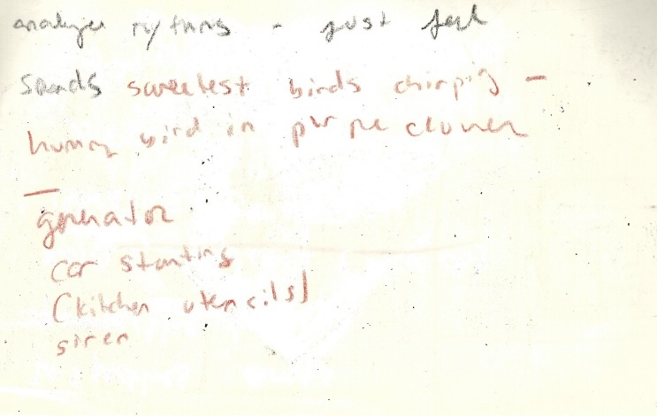
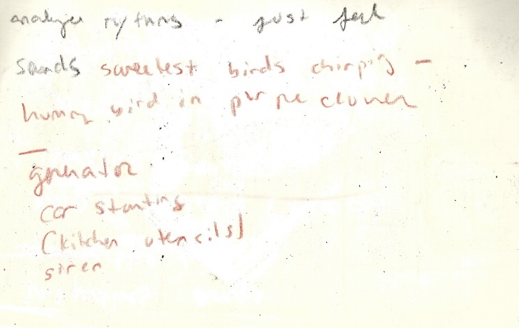

audio recording of me talking to myself while walking. i took over 100 voice memos on my recorder. while recording myself on my phone makes it easy to simply send the file over internet to my email, then download it and upload to a transcription software, i dislike having my phone out while doing fieldwork. i much prefer the feel of my voice recorder which rests discreetly in my palm. to recall my thoughts, however, i must first connect the device to my laptop through a connector cable, download each file, then run through a free file type converter online so that i can open and edit my recordings as mp3s in iMovie. i use otter.ai to transcribe my memos, but can only transcribe 3 files for free with each account i create, and must upload clips no longer than 30 minutes. so i string thoughts together in iMovie––like by day. keeping track of all the files and back-up copies and developing naming conventions is a whole other challenge. then there's the task of reading through everything i wrote.


 



Before you read my proposal I ask that you take three minutes to sketch a map of your Vancouver. Not
everywhere or everything. Just the city as you know it. Sense it. Inhabit it. Forget geographical
accuracy; no projection of is without distortion anyway.
What you have made is a counter-cartography. Counter-cartography describes maps and mapping practices
that counter established ways of rendering and moving through space. For my master’s thesis in geography
I will create a counter-cartography of Vancouver based on my praxis of deep mapping.
To map deeply is to engage with space in an embodied manner, collecting observations with senses beyond
the visual. I draw theoretical and practical inspiration from psychogeographer Guy Debord, whose map The
Naked City1 reconfigurers a map of Paris neighbourhoods based on the directions and
intensities with which Debord found himself drawn as he walked, or, more precisely, performed
dérive––drifting. Psychogeography is a mode of deep mapping that attends to the ways in which urban
geographies effect human emotions and behaviour.2 My own reconfiguration of Vancouver will
emerge not only from my observations of the city, but from an attention to reflexivity throughout my
research process. I find inspiration for an alternate scope in Everything Sings, a narrative atlas by
Denis Wood of his home neighbourhood. Deep mapping requires from me, the bricoleur-as-researcher, a
methodological eclecticism.3 This means gathering/developing a set of methods, skills, and
materials which I can apply in different configurations based on the situation at hand. I’ve written
briefly about my toolkit here. I will flush this
out before I ‘begin.’
While the form of my counter-cartography, its scope and its purpose are still inchoate, my overarching
goal for this degree is to explore where I am and figure out what being a geographer is for me. I see my
thesis as an opportunity to dig in to the ground where I stand––to attune myself to the rhythms of this
city (including its layers of displacement and erasure) and render something of my own experience here.
My thesis is practice-based in that I aim to generate new knowledge by means of a creative practice.
Moreover, because an understanding of the context and significance of practice-based research claims
requires direct reference to the original creative work,4 I invoke research creation to
support my thesis being a map––a map along with, though not superseded by or interchangeable with, a
textual component.
Notes:
1. Guy Debord, The Naked City, 1957, 33.3 x 48.3 cm, 1957.
2. Guy Debord, “Introduction to a Critique of Urban Geography,” The Situationist International Text
Library, 1955.
3.Les Roberts, “Spatial Bricolage: The Art of Poetically Making Do,” Humanities 7, no. 2 (June 2018):
43.
4. Linda Candy, “Practice Based Research: A Guide,” 2006, 19.